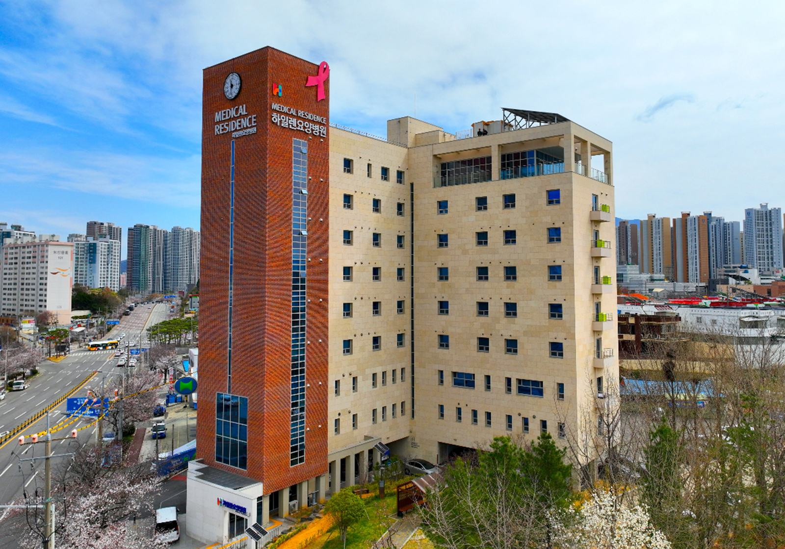
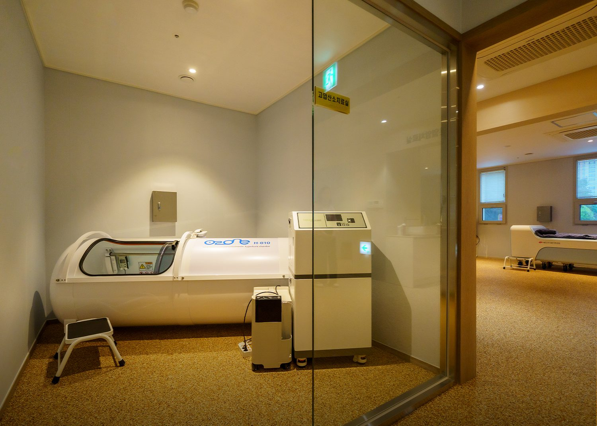
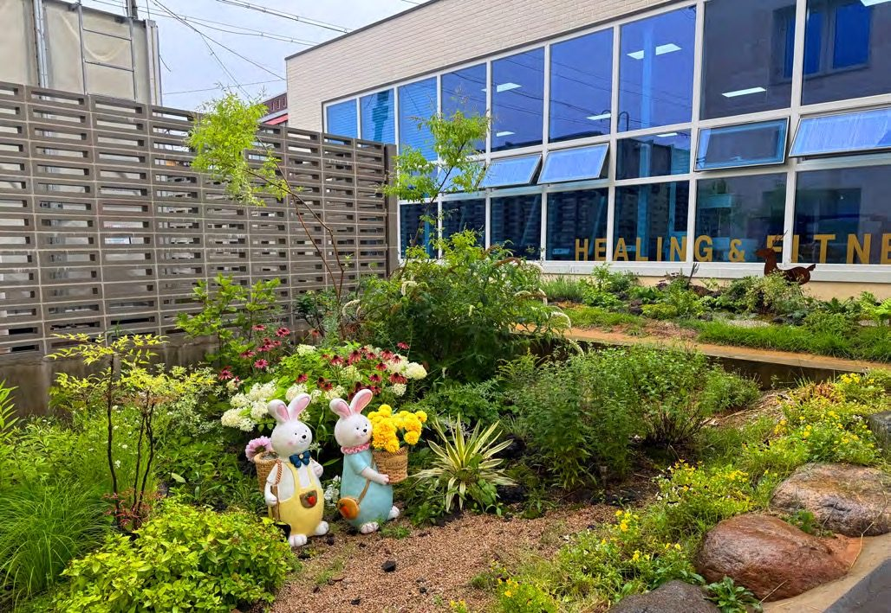

치료센터 다섯 공간은 각각 무엇을 하는 곳인가요?
하일렌요양병원은 입원부터 외래까지, 치료 이후의 회복 여정을 함께합니다. 치료센터는 온열암치료센터, 암재활 림프 순환센터, 면역 및 통증 치료센터, 외래센터 블룸, 2층 회복 정원의 다섯 공간으로 나뉩니다. 공간마다 무엇을 하는 곳인지 차례로 소개해 드립니다. 암 치료는 지금 다니시는 대학병원·암병원에서 그대로 이어 가시고, 하일렌요양병원은 그 사이의 회복을 함께 돌봐 드립니다.

- 공간
- 온열암치료센터 · 암재활 림프 순환센터 · 면역 및 통증 치료센터 · 외래센터 블룸 · 2층 회복 정원
- 외래 회복치료
- 고주파온열암치료 · 고압산소치료 · 도수치료 · 림프 관리 · 고용량 비타민C · 면역 주사제 · 영양공급수액
- 이용
- 입원 환자분과 외래 환자분이 함께 이용하십니다. 단기입원은 1박 2일부터입니다.
- 문의
- 원내 상담실 · 카카오톡 채널 · 062-439-1000
치료와 프로그램 안내
회복 단계에 맞춘 회복 프로그램
환자분의 상태와 회복 단계에 맞춰 짠 회복 프로그램을 준비해 드립니다. 아래 치료는 건강한 일상으로 돌아가시는 것을 목표로 합니다.
아래에서는 각 치료가 어떤 방법인지 소개합니다. 어떤 치료를 받으실지는 주치의가 몸 상태를 살피고 환자분과 이야기를 나눈 뒤 함께 정합니다.
온열암치료센터
전신온열치료 · 고주파온열암치료 · 고압산소치료를 하는 곳입니다. 온열암치료실은 2층에 있습니다.


고주파온열암치료(High-Frequency Hyperthermic Cancer Therapy)는 고주파를 암조직에 가하는 온열 치료법입니다. 고압산소치료(Hyperbaric Oxygen Therapy)는 고농도의 산소를 흡입하는 치료법입니다. 전신온열치료(Whole-body Hyperthermia Chamber)는 전신에 열을 가하는 온열 치료법입니다.
암재활 림프 순환센터
림프부종 치료 · 도수치료 · 암재활 운동치료 · 통증치료를 하는 곳입니다. 재활치료실(통증·도수·림프·레이저치료실)은 3층에 있습니다. 3층 통증치료실에서는 통증 치료 장비(페인닥터)와 도수치료로 통증을 다룹니다.


어디까지 움직여도 되는지는 주치의가 몸 상태를 살피고 환자분과 이야기를 나눈 뒤 함께 정합니다. 암재활 운동치료에는 걷기 운동 프로그램이 따로 없습니다.
도수·림프·통증·고주파 치료는 외래 환자도 입원 환자와 같은 시설에서 받으실 수 있습니다.
면역 및 통증 치료센터
면역 주사제와 통증·자율신경 주사치료를 하는 곳입니다. 면역주사실은 9층 외래센터 블룸에, 통증치료실은 2층에 있습니다. 2층 통증치료실에서는 자율신경 주사를 놓고, C-arm(씨암)이라는 실시간 엑스레이 투시 장비로 주사 바늘이 들어가는 자리를 화면으로 보며 통증 주사를 놓습니다. 갑상선을 비롯한 암 진료에 필요한 확인도 이곳에서 합니다.
면역 치료
면역주사실에서는 면역 주사제로 치료 이후의 회복을 돕습니다. 의료진이 곁에서 세심하게 살피며 면역 주사제를 관리합니다.
면역 주사제(싸이모신 알파1, 미슬토, 셀레늄, 고용량 비타민C, 글루타치온, 이뮤코텔, 메시마F, 비타민 주사)와 자율신경계 안정화 치료를 합니다. 비급여 항목과 금액은 비급여 항목 안내에 있습니다.
상처와 배액관, 케모포트는 주사·상처관리 전담팀이 살펴 드립니다. 한 팀이 이어서 봅니다.
외래센터 블룸
건강한 삶이 다시 피어나는 곳, 환자분들의 활기찬 일상을 위한 외래 진료 공간입니다. 외래 환자를 위한 외래 회복치료 공간으로 9층에 있습니다. 면역주사실도 이곳에 있습니다.

리클라이너 주사실, 세라젬 의료기기, 소금편백찜질방, 발마사지기가 있어 휴식과 치료를 함께 누리실 수 있습니다.
외래로 받으실 수 있는 회복치료 7종과 이용 방법은 단기입원·외래 안내에서 보실 수 있습니다.
2층 회복 정원
정원 · 어싱장 · 편백 족욕이 있는 자연 회복 공간입니다. 2층 로비 앞에 있습니다.

가드닝 클래스에서 환자분들이 심었던 정원은 겨울을 지나 초록빛으로 무르익었고, 새로 조성한 정원 공간도 나란히 문을 열었습니다. 그 사이에 맨발로 흙을 밟으며 걸을 수 있는 어싱장과 따뜻한 물에 발을 담글 수 있는 편백 족욕 시설이 있습니다.
맨발로 흙을 밟는 어싱장은 1층 야외 황토 어싱장과 2층 로비 앞 두 곳에 있습니다. 정해진 시간 없이 낮 동안 언제든 걸으실 수 있고, 잔잔한 음악이 흐릅니다. 걷고 나면 바로 옆 편백 족욕에서 발을 담그실 수 있습니다.
층별 안내
| 층 | 공간 | 안내 |
|---|---|---|
| 1층 | 갤러리(면회 장소) | 환자와 보호자가 함께 머무는 감성 휴식 공간입니다. 면회 기준은 오시는 길·면회에서 보실 수 있습니다. |
| 1층 | 야외 황토 어싱장 | 로비 앞에 있습니다. 맨발 걷기와 산책을 하실 수 있는 공간으로, 바로 앞에 광주시립미술관·하정웅미술관이 있어 예술을 곁에 두고 어싱을 즐기실 수 있습니다. |
| 2층 | 회복 정원 | 로비 앞에 정원, 어싱장, 편백 족욕이 있습니다. |
| 2층 | 상담실·원무과 | 처음 오시는 분의 방문 상담을 하는 곳이고, 원무과도 2층에 있습니다. 1층에서 중앙 엘리베이터를 타고 2층으로 올라오시면 됩니다. 입원·외래·단기입원 환자분은 이곳에서 치료 일정 담당자를 처음 만나시고, 그 뒤의 일정 조정과 치료 계획은 카카오톡 채널로 주고받습니다. |
| 2층 | 온열암치료실·통증치료실·임상병리실·약국 | 검사와 치료로 회복을 돕는 공간입니다. 임상병리실에서는 혈액검사를 하고, 임상병리실 안의 엑스레이실에서 흉부 엑스레이를 촬영합니다. 2층 통증치료실은 C-arm(실시간 엑스레이 투시 장비)으로 보며 주사하는 곳입니다. 원내 약국도 2층에 있습니다. |
| 2층 | 탈의실과 샤워장(온열암치료실) | 운동과 치료 후의 개운함을 더해 주는 쾌적하고 청결한 공간입니다. |
| 2층 외부 | 힐링 & 휘트니스센터 | 개인 운동과 휴식을 자유롭게 하실 수 있는 공간입니다. |
| 2층 외부 | 골프 퍼팅장 | 가벼운 퍼팅 연습으로 몸을 움직이는 즐거움을 되찾는 공간입니다. |
| 3층 | 재활치료실(통증·도수·림프·레이저치료실) | 통증 관리와 신체 기능 회복을 위한 재활치료 공간입니다. 통증은 통증 치료 장비(페인닥터)와 도수로 다룹니다. |
| 9층 | 외래센터 블룸(면역주사실) | 건강한 삶이 다시 피어나는 곳, 환자분들의 활기찬 일상을 위한 외래 진료 공간입니다. 면역 주사제 치료를 이곳에서 합니다. |
| 9층 | 소금편백찜질방 | 온열 환경 속 편안한 휴식 공간입니다. |
| 10층 | 스카이라운지 식당 | 평소 식사와 다과를 즐기시는 곳이며, 외부 초청 공연 같은 여러 문화 활동도 열립니다. |
| 10층 | 힐링프로그램실과 기도실 | 정서 회복을 돕고 환자분들끼리 자유롭게 모임 활동을 하시는 공간입니다. 기도실에서는 개인 명상도, 각자의 종교에 따른 기도도 하실 수 있습니다. |
자주 묻는 질문
입원하지 않아도 치료센터의 치료를 받을 수 있나요?
입원하지 않으셔도 외래로 통원하며 고주파온열암치료, 고압산소치료, 도수치료, 림프 관리, 고용량 비타민C, 면역 주사제, 영양공급수액을 받으실 수 있습니다. 외래 일정은 원내 상담실에서 안내해 드립니다.
치료센터 이용과 입원·외래·단기입원 상담은 원내 상담실에서 도와 드립니다. 궁금한 점이 있으시면 언제든 편하게 물어봐 주세요.
제공 하일렌요양병원 · 갱신 2026-10-21